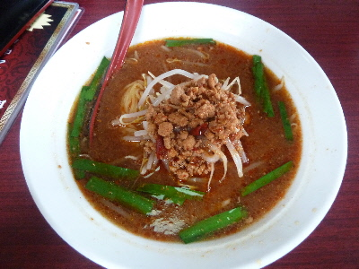

300円ラーメン美味しかったです。
2016/09/19
台湾料理 美食源の300円ラーメンを食べに行きました。

みミンチ多目ですね。
コクがあって、美味しいラーメンでした。
これで300円はとってもお買い得です。
通常はもっと高いラーメンを安くしてる感じがしました。
安くて美味しいので、また気軽に食べに行きたいです。
台湾料理屋さんて増えましたよね。なんとなく同じ系列の店？なんて思ってたんですが、会社が違うみたいですね。
食品営業許可施設の資料によると、
台湾料理 美食源は 栄昇 株式会社
台湾料理 瑞祥 出雲店は 合同会社 祥瑞
台湾料理 豊源は 株式会社 ＭＯＲＩ
台湾料理 福来順は 梁 占秋
それぞれ経営は違うみたい。味も違うんでしょうね。